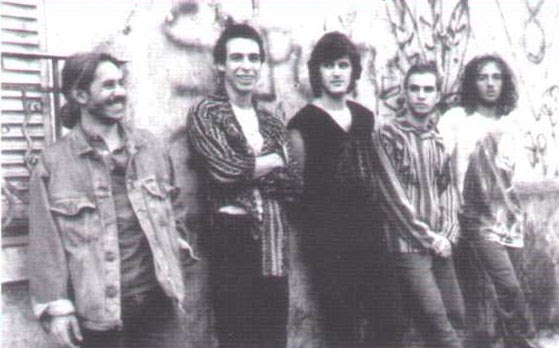
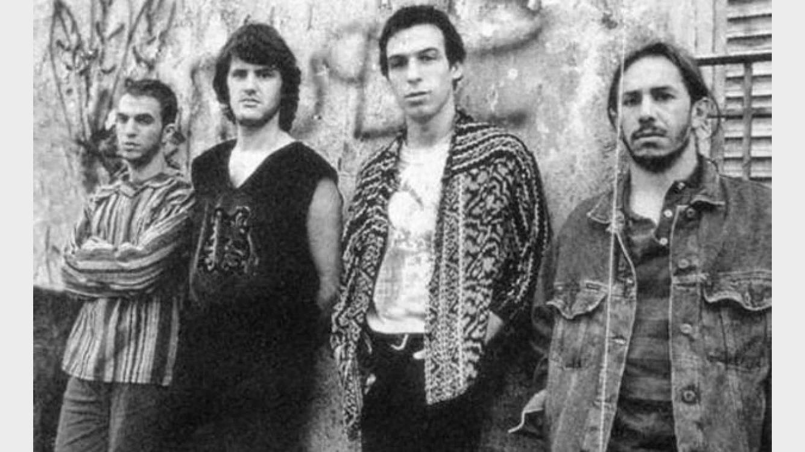
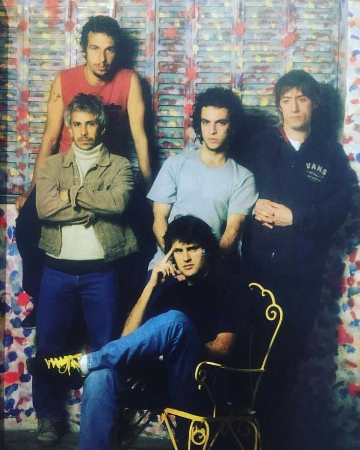
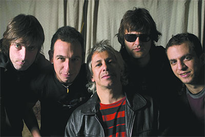
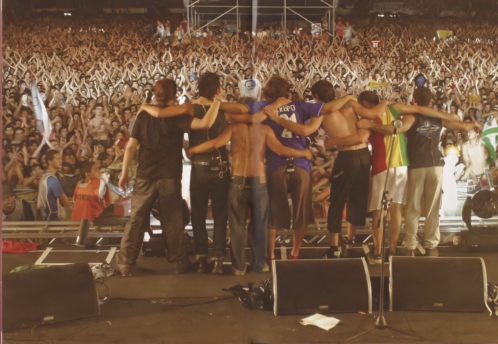

Historia
La banda nace en el barrio del Palomar, en la provincia de Buenos Aires, como un grupo que hace rock mezclando cosas nuevas; algún candombe, algún tanguito, algo que no se parecía a lo que había para escuchar por ese entonces.
Comenzaba la década del ‘90 cuando empezaron a pisar nuevos escenarios: Teatro Arlequines, Graf Zeppelin, Baroqué, Always, Ma Baker (allí Andrés Ciro cantó por primera vez), La Plaza del Avión y Boa Vista. Esa noche, el guitarrista invitado fue Skay Beilinson, de Patricio Rey y sus Redonditos de Ricota. Fueron inolvidables las fechas en Villa Gesell en el verano de 1989/90 en el boliche Toulousse, sobre la costa; actuaron 13 veces en 15 noches. Los Piojos dormían en cuartitos de chapa, en camas marineras llenas de pulgas. Pero valió la pena: los vieron casi 100 personas por recital. Los espectadores primarios eran los amigos más cercanos. El repertorio iba de algunas canciones propias (El blues del gato sarnoso, Ay qué maravilla) a covers (de los Stones y Lou Reed).
Fueron invitados a ser parte del Festival de Música Antirracista de Países del Tercer Mundo, nada menos que en una de las capitales de Europa, París. Ya los seguían chicos de colegios de la Capital, como ser el Esnaola (de orientación musical), que tenía entre sus alumnos a Tavo Kupinski, que tocaba en Los Sabuesos y conocía a la banda porque su novia era de Ciudad Jardín. Él pasó a reemplazar al violero Pablo Guerra. Y fue en el invierno de 1992 cuando por fin entraron al estudio Del Cielito Records. En esta ocación registraron "Chac tu chac", su primer disco. La versión rocker del tango "Yira yira" los ubicó en un plano de atención mayor, por atrevidos. Las románticas "Tan sólo" y "A veces" mostraban una veta sensible que siempre lucen con orgullo. Sin embargo, el apoyo de la compañía era nulo.
La escenografía en los escenarios ya era costumbre. El color rojo del segundo disco, "Ay ay ay" (1994), llenaba los ojos. Este segundo trabajo de Los Piojos fue dedicado a Diego Armando Maradona. En 1996 salieron al ruedo con un tercer álbum que los puso al frente de las ventas. Se trata de "Tercer Arco", que fue presentado en el Teatro Arpegios. Eso derivó en los primeros Obras para la banda. Dos estadios casi llenos confirmaron lo que las ventas y los comentarios de la calle decían.
En el verano de 1997 se dio una especie de revolución piojosa. "El Farolito" y "Verano del ’92" eran cabeza de ranking en todas las radios y el clip de "Maradó" trepaba al Top Ten de canales de televisión. En Julio  de ese año metieron 10 mil personas en el Microestadio de Racing Club de Avellaneda y en Noviembre volvieron a Buenos Aires para sitiar el Parque Sarmiento, ante 7 mil piojosos. Entraron otra vez a estudios para grabar su cuarto trabajo, y a comienzos de 1998 editaron "Azul". Tres presentaciones en Obras. La invitación fue ideal para que el público piojoso fuera en masa a dar el presente: iban a grabar su primer disco en vivo.Y el amor que había nacido con el futbolista Diego Maradona tuvo su momento de gloria en aquel estadio, cuando el jugador de fútbol subió al escenario y agradeció a la banda que se pellizcaba para saber si era verdad. Casi dos meses después actuaron en la ciudad de La Plata, donde anunciaron el nombre del nuevo disco, "Ritual", y el de su propio sello discográfico (El Farolito Discos). En medio de la grabación de su próximo álbum llegó un momento triste para la banda: el adiós de Dani Buira, el baterista y percusionista. Quien lo reemplazaría, sería Sebastián “Roger” Cardero.
En 2000 lanzan "Verde Paisaje del Infierno" con un show en en la cancha del Club Atlético Atlanta, convocando a 30 mil personas. En Noviembre de 2002 llegó el esperado segundo disco en vivo, "Huracanes en Luna Plateada", álbum doble. Además, la placa hacía un combo con un libro de fotos de 60 páginas donde se puede  recorrer visualmente la carrera de la banda, desde sus comienzos hasta la fecha. En Noviembre de 2003 sale a la venta "Máquina de Sangre", el nuevo disco. En Septiembre de 2008, se alejó del grupo Daniel "Piti" Fernández, y forma su propia banda, La Franela, siendo reemplazado por Juanchi Bisio. El 28 de Abril de 2009, la banda emitió una carta desde su sitio oficial anunciando un "parate" por tiempo indeterminado, aclarando que no se separan, pero tampoco saben cuando volverán a reunirse. En el 2010 su vocalista, Andrés Ciro Martínez comenzó su carrera solista, y así nació Ciro y Los Persas.